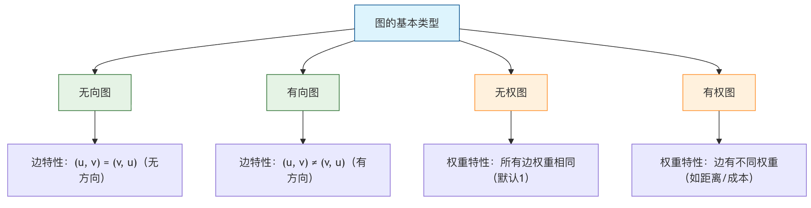

Graph Theory Structure
In computer science, graphs are widely used to model social networks (users are nodes, friendships are edges), web links (web pages are nodes, hyperlinks are edges), communication networks, and even path planning problems.
GraphIt's like a social network relationship graph:
- Node (Vertex): Each person in the social network
- Edge: Relationships between people (friends, follows, etc.)
- Weight: strength of the relationship (closeness, interaction frequency, etc.)
Imagine the transportation network in your city: various locations (such as home, school, shopping mall) arePoint, the roads connecting these locations areLine. A graph (Graph) is the mathematical abstraction of the relationship between points and lines; it is used to representComplex relationships between entitiesa data structure.
Real-life examples:
- Map: cities are nodes, roads are edges, distances are weights
- Circuit: components are nodes, wires are edges, resistance is the weight
- Internet: websites are nodes, links are edges, traffic is the weight
- Transportation network: stations are nodes, routes are edges, fares are weights
| Scenarios | Other structures | Graph structure |
|---|---|---|
| Social relationships | Difficult to express complex relationships | Naturally expresses many-to-many relationships |
| Path planning | Requires complex data structures | Intuitively represents networks and paths |
| Dependency relationships | Difficult to represent circular dependencies | Easily handles complex dependencies |
| Network analysis | Cannot express network topology | Perfectly describes network structure |
Basic terminology of graphs
| Term | definition | Life Analogy | Symbol representation |
|---|---|---|---|
| Vertex | Basic unit in a graph | People in social networks | V, u, v |
| Edge | A line connecting two vertices | Relationship between two people | E, (u,v) |
| Degree | Number of edges connected to a vertex | A person's number of friends | deg(v) |
| Path | Sequence of vertices | Route from A to B | v₁→v₂→…→vₙ |
| Cycle | A path with the same start and end point | Starting from home and eventually returning home | v₁→v₂→…→v₁ |
| Connected graph | There is a path between any two points | Everyone can connect with each other | |
| Weight | Numerical property of an edge | Distance between two cities | w(u,v) |
Classification of graphs

| Classification criteria | Type | Features | application scenarios |
|---|---|---|---|
| Directionality | Undirected graph | Edges have no direction | Friend relationships, road networks |
| Directed graph | Edges have direction | Follow relationships, workflows | |
| Weight | Unweighted graph | All edges have the same weight | Social network relationships |
| Weighted graph | Edges have different weights | Map distance, network traffic | |
| Connectivity | Connected graph | Any two points are reachable | Transportation network |
| Disconnected graph | There are isolated vertices | Social groups | |
| Cycle | Acyclic graph | No cycles | Task dependencies, family trees |
| Cyclic graph | Contains cycles | Road network |
Graph representation methods
adjacency matrix
| Features | Description | Time complexity | Space complexity |
|---|---|---|---|
| Storage method | two-dimensional matrix | ||
| check edge existence | matrix[i][j] != 0 |
O(1) | |
| add edge | matrix[i][j] = weight |
O(1) | |
| delete edge | matrix[i][j] = 0 |
O(1) | |
| traverse adjacent vertices | scan a row/column | O(V) | |
| space usage | V×V matrix | O(V²) |
adjacency list
| Features | Description | Time complexity | Space complexity |
|---|---|---|---|
| Storage method | array + linked list | ||
| check edge existence | Search in a linked list | O(deg(v)) | |
| add edge | Add in a linked list | O(1) | |
| delete edge | Delete in a linked list | O(deg(v)) | |
| traverse adjacent vertices | traverse linked list | O(deg(v)) | |
| space usage | Vertex array + edge linked list | O(V+E) |
Basic concepts of graphs
a graphGConsists of two sets:
- Vertex Set V (Vertex Set): The set of all vertices in the graph.
- Edge Set E (Edge Set): the set of lines connecting these points. An edge is defined by the two vertices it connects
(u, v)Represents.
Example
# Vertices: Alice, Bob, Charlie, Diana
# Edges: represent the friend relationships between them
social_graph = {
'Alice': ['Bob', 'Charlie'], # Alice is friends with Bob and Charlie
'Bob': ['Alice', 'Charlie', 'Diana'],
'Charlie': ['Alice', 'Bob'],
'Diana': ['Bob']
}
print(fVertices (users): {list(social_graph.keys())})
print(fAlice's friends (edges): {social_graph['Alice']})
Output:
顶点（用户）: ['Alice', 'Bob', 'Charlie', 'Diana'] Alice 的好友（边）: ['Bob', 'Charlie']
Graph classification and important concepts
Graphs can be divided into multiple types based on the properties of their edges; understanding these is the foundation of mastering graph theory.
Undirected graph vs directed graph
| Type | Characteristics of edges (Edge) | life analogy | Example |
|---|---|---|---|
| Undirected graph | Edges have no direction,(A, B)Represents that A and B are mutually connected. |
bidirectional friendship: if Alice is Bob's friend, then Bob must also be Alice's friend. | Friendships in social networks, connections in circuits. |
| Directed graph | edges have direction,A -> BRepresents a one-way connection from A to B. |
Weibo following: You can follow someone, but the other person may not follow you back. | Web hyperlinks, task dependencies, one-way traffic roads. |

weighted graph
In a weighted graph, each edge is assigned a numerical value (weight), which can represent distance, cost, time, or relationship strength.
Example
weighted_graph = {
'Beijing': {('Shanghai', 1200), ('Tianjin', 100)}, # Distance from Beijing to Shanghai is 1200, to Tianjin is 100
'Shanghai': {('Beijing', 1200), ('Hangzhou', 200)},
'Tianjin': {('Beijing', 100)},
'Hangzhou': {('Shanghai', 200)}
}
key terms
- degree (Degree): the number of edges connected to a vertex. In a directed graph, it is divided intoin-degree(number of edges pointing to the vertex) andout-degree(number of edges pointing out from the vertex).
- path (Path): a sequence of edges traversed from one vertex to another. For example,
A -> B -> C。 - cycle/circuit (Cycle): a path whose starting point and ending point are the same vertex.
- Connected Graph: in an undirected graph, there is a path between any two vertices.
- Strongly Connected Graph: in a directed graph, there is a path between any two vertices.bidirectionalpath.
Graph storage methods
How to represent a graph in a computer? There are mainly two mainstream methods.
adjacency matrix
Use a two-dimensional array (matrix)matrixto represent the graph.matrix[i][j]The value represents the vertexito vertexjThe situation of edges.
- For undirected graphs, the matrix is symmetric.
- For a weighted graph, the matrix entries store weights (using special values such as
0or∞Represents no edge). - Advantages: checking whether there is an edge between any two vertices is very fast (
O(1)）。 - Disadvantages: Takes up a lot of space (
O(V^2)), but it wastes space for "sparse graphs" with few edges.
Example
# Vertices: 0-A, 1-B, 2-C
# Edges: A-B, A-C
V = 3 # Number of vertices
adj_matrix = [[0] * V for _ in range(V)]
# Add edge A-B (0-1)
adj_matrix[0][1] = 1
adj_matrix[1][0] = 1 # Undirected graph needs to set symmetric positions
# Add edge A-C (0-2)
adj_matrix[0][2] = 1
adj_matrix[2][0] = 1
print("Adjacency matrix:")
for row in adj_matrix:
print(row)
# Output:
# [0, 1, 1]
# [1, 0, 0]
# [1, 0, 0]
adjacency list
Maintain a list (linked list, array, etc.) for each vertex, recording all vertices (and weights) directly connected to it.
- Advantages: High space efficiency (
O(V + E)), especially suitable for sparse graphs. It can quickly find all neighbors of a vertex. - Disadvantages: checking whether there is an edge between any two vertices is slower (
O(degree(V))）。
Example
adj_list = {
'A': ['B', 'C'], # A connects to B and C
'B': ['A'], # B connects to A
'C': ['A'] # C connects to A
}
print("Adjacency list:")
for vertex, neighbors in adj_list.items():
print(f"{vertex}: {neighbors}")
Graph traversal algorithms
Traversal is the foundation of graph algorithms; it means systematically visiting every vertex in the graph.
There are mainly two strategies:
Breadth-First Search
Breadth-first search (BFS) is like "water wave diffusion": starting from the starting point, it first visits all direct neighbors, then the neighbors' neighbors, and so on. It usesQueueto implement.
Algorithm steps：
- Put the starting point into a queue and mark it as visited.
- When the queue is not empty:
a. Dequeue the front vertex
v. b. Visitvall unvisited neighbors of it, put them into the queue and mark them as visited. - Repeat step 2.
Example
def bfs(graph, start):
"""Use BFS to traverse the graph, return visit order"""
visited = set([start]) # Record visited vertices
queue = deque([start]) # Initialize queue
result = [] # Store visit order
while queue:
vertex = queue.popleft()
result.append(vertex)
# Traverse the neighbors of the current vertex
for neighbor in graph[vertex]:
if neighbor not in visited:
visited.add(neighbor)
queue.append(neighbor)
return result
# Test data
test_graph = {
'A': ['B', 'C'],
'B': ['A', 'D', 'E'],
'C': ['A', 'F'],
'D': ['B'],
'E': ['B', 'F'],
'F': ['C', 'E']
}
print("BFS traversal order (starting from A):", bfs(test_graph, 'A'))
# Output could be: ['A', 'B', 'C', 'D', 'E', 'F']
Depth-First Search
Depth-first search (DFS) is like "walking through a maze": it chooses one path, goes to the end, then backtracks and takes another path. It usesStack(or recursion) to implement.
Recursive algorithm steps：
- from vertex
vStart, mark as visited. - for
vevery unvisited neighbor ofu: a. Recursive callDFS(u)。
Example
"""Implement DFS using recursion"""
if visited is None:
visited = set()
if result is None:
result = []
visited.add(vertex)
result.append(vertex)
for neighbor in graph[vertex]:
if neighbor not in visited:
dfs_recursive(graph, neighbor, visited, result)
return result
print("DFS traversal order (starting from A):", dfs_recursive(test_graph, 'A'))
# The output may be: ['A', 'B', 'D', 'E', 'F', 'C']
Comparison of graph traversal algorithms:

Classic application scenarios and algorithm introduction
Once you have mastered graph representation and traversal, you can explore many classic problems:
Shortest path problem: in map navigation, find the shortest driving distance between two points.
- Dijkstra's algorithm: applies tonon-negative-weightgraphs.
- Floyd's algorithm: compute the shortest paths between all pairs of vertices.
Minimum Spanning Tree: under the premise of keeping all vertices connected, select the edge set with the smallest total weight (for example, laying the lowest-cost fiber network for multiple villages).
- Prim's Algorithm
- Kruskal's algorithm
Topological Sorting: linearly order the vertices of a directed acyclic graph (DAG) so that for any directed edge
u->v，uIn sorting, all are rankedvbefore (for example, arranging the learning order of courses).